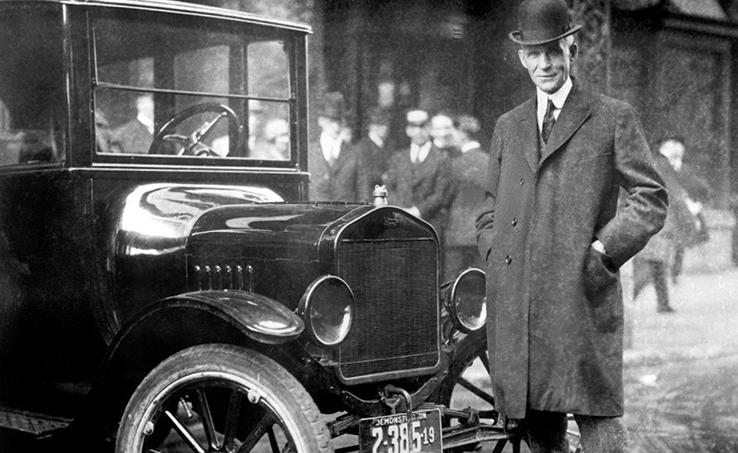

About Us
Ford Motor Company, commonly known as Ford, is an American multinational automaker founded by Henry Ford on June 16, 1903. The company has its main headquarters in Dearborn, Michigan, a suburb of Detroit. Ford is known for revolutionizing the automobile industry by introducing assembly line production, which made car manufacturing more efficient and significantly reduced costs.
One of the company's most famous innovations was the Model T, introduced in 1908, which became known as the first affordable automobile for the masses. This vehicle is often credited with creating a market for automobiles in the United States and transforming transportation worldwide.
Over the years, Ford has expanded its product lineup to include a wide range of vehicles, from compact cars to heavy-duty trucks. The company has also been at the forefront of technological advancements in the automotive industry, including the development of the V8 engine, safety features like seat belts and airbags, and more recently, advancements in electric and autonomous vehicle technology.
Ford's commitment to innovation extends beyond its vehicles. The company has also made significant contributions to manufacturing processes, employee welfare, and environmental sustainability. With a presence in markets around the globe, Ford continues to be a leader in the automotive industry, dedicated to providing quality, reliability, and innovation in every vehicle it produces.
Today, Ford's vision is to become the world's most trusted company, designing smart vehicles for a smart world, and driving human progress through its commitment to sustainability and social responsibility.